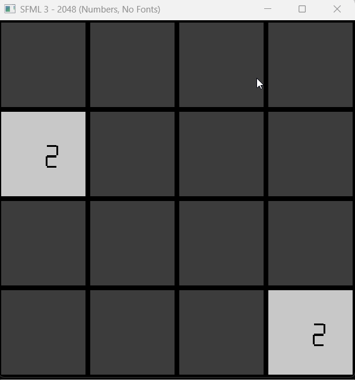

# Creative Play, Characters, and Storytelling <hr> <br> Xinxing Wu
# Outline [<p class="hover-underline-animation">Creative & Expressive Play </p>](#/ch1) [<p class="hover-underline-animation">Character Development</p>](#/ch2) [<p class="hover-underline-animation">Storytelling + integration mini-design</p>](#/ch3) [<p class="hover-underline-animation">Lab</p>](#/ch4)
## Goal <div id="shadebox-neon" class="shadebox neon"> Learn *why* these matter, *what* the key terms mean, and *how* to apply them in a simple game concept. By the end, you can: - Explain **<spanGREEN>creative play</spanGREEN>** vs **<spanGREEN>expressive play</spanGREEN>** - Design a simple **creation system** (constrained vs sandbox) - Build a **character sheet** (avatar + NPC - Non-Player Character) with consistent traits - Choose a **story structure** (linear/branching/foldback/emergent) - Sketch a **tiny storytelling engine** idea using triggers + variables </div>
<p class="definition-rainbow-title">Games and Play</p>
<div class="definition-com-container"> <div class="definition-com-title">The “One-Sentence” Game Design Lens</div> <div class="definition-com-shadebox"> > “The player expresses themselves (play), through someone (character), while something changes (story).” </div> </div> <div class="question-container"> <div class="question-title">Note</div> <div class="question-shadebox"> - Imagine a game where the player <spanGREEN>controls</spanGREEN> a young knight in a cave. - The knight <spanGREEN>finds</spanGREEN> a goblin sword on the ground after defeating a goblin chief. </div> </div> <div class="definition-container"> <div class="definition-title">Note</div> <div class="definition-shadebox"> - <spanGREEN>The player expresses themselves (play)</spanGREEN> - The player chooses what to do with the goblin sword. They might: - pick it up and use it, - ignore it, - sell it later, - or keep it as a trophy. - These <spanGREEN>choices</spanGREEN> show the player’s style. Maybe the player is aggressive, careful, greedy, or curious. </div> </div> <div class="definition-container"> <div class="definition-title">Note</div> <div class="definition-shadebox"> - <spanGREEN>Through someone (character)</spanGREEN> - The character — the knight — is the one holding the goblin sword, swinging it, and carrying it. </div> </div> <div class="definition-container"> <div class="definition-title">Note</div> <div class="definition-shadebox"> - <spanGREEN>While something changes (story)</spanGREEN> - Once the knight takes the goblin sword, the story changes. For example: - villagers may fear the knight because the sword looks evil, - a goblin tribe may want revenge, - the sword may unlock a secret goblin gate, - or the knight may slowly learn the sword belonged to a lost goblin king. </div> </div> <div class="definition-container"> <div class="definition-title">Note</div> <div class="definition-shadebox"> > The player decides <spanBYMix>how</spanBYMix> to use the goblin sword (play), <spanBYMix>through</spanBYMix> the knight (character), and that decision changes <spanBYMix>what</spanBYMix> happens next in the world (story). </div> </div> <div class="definition-container"> <div class="definition-title">Note</div> <div class="definition-shadebox"> > The player chooses to <spanBYMix>pick up and use</spanBYMix> the goblin sword, the knight carries out that action, and the story changes because the sword brings new danger and new opportunities. </div> </div> <div class="definition-container"> <div class="definition-title">Note</div> <div class="definition-shadebox"> - Player choice: “I will <spanGREEN>use</spanGREEN> the goblin sword.” - Character action: The knight <spanGREEN>equips</spanGREEN> it. - Story change: New enemies, reactions, and events <spanGREEN>begin</spanGREEN>. </div> </div> <div class="definition-pro-Y-container"> <div class="definition-pro-Y-title">Why Creative / Expressive Play Matters</div> <div class="definition-pro-Y-shadebox"> - Players <spanRED>don’t</spanRED> only want to “win” - They want to **make**, **show**, **role-play**, and **share** - Creative play extends replay value (players generate their own fun) </div> </div> <div class="definition-pro-Y-container"> <div class="definition-pro-Y-title">Two Key Terms</div> <div class="definition-pro-Y-shadebox"> **Creative play:** player <spanGREEN>builds/creates</spanGREEN> something (often inside a system) **Expressive play:** player <spanGREEN>communicates identity/feelings/style</spanGREEN> through play </div> </div> <div class="definition-pro-Y-container"> <div class="definition-pro-Y-title">Example (Creative vs Expressive)</div> <div class="definition-pro-Y-shadebox"> - **Creative:** <spanGREEN>build</spanGREEN> a house layout in a game editor - **Expressive:** decorate it to show <spanGREEN>personality</spanGREEN> (cozy, spooky, minimal) </div> </div> <div class="definition-pro-Y-container"> <div class="definition-pro-Y-title">Note - Creative play</div> <div class="definition-pro-Y-shadebox"> Meaning: the player makes or builds something inside the game system. - Example: In a game, the player collects wood, stone, and iron to build a goblin fort. - The game gives materials and building rules. - The player uses those rules to create walls, towers, and traps. - The main idea is <spanGREEN>creating something new</spanGREEN>. So this is creative play because the player is building something inside the game world. </div> </div> <div class="definition-pro-Y-container"> <div class="definition-pro-Y-title">Note - Creative play</div> <div class="definition-pro-Y-shadebox"> Meaning: the player makes or builds something inside the game system. - Example: In Minecraft, <spanGREEN>building a castle is creative play</spanGREEN>. </div> </div> <div class="definition-pro-Y-container"> <div class="definition-pro-Y-title">Note - Expressive play</div> <div class="definition-pro-Y-shadebox"> Meaning: the player shows their personality, identity, feelings, or style through what they do. - Example: A player gives their character a goblin sword, dark armor, and chooses to <spanGREEN>act like a mysterious anti-hero instead of a shining hero</spanGREEN>. - Maybe they like a dark style. - Maybe they want their character to feel dangerous or lonely. - Maybe they choose dialogue that sounds proud or sarcastic. This is expressive play because the player is using the game to express a <spanRED>certain identity or mood</spanRED>. </div> </div> <div class="definition-pro-Y-container"> <div class="definition-pro-Y-title">Note - Expressive play</div> <div class="definition-pro-Y-shadebox"> Two players may play the same game <spanRED>differently</spanRED>: - one dresses their character in bright colors and helps everyone, - another uses dark clothes and acts quietly. That difference is <spanGREEN>expressive play</spanGREEN>. </div> </div> <div class="definition-pro-Y-container"> <div class="definition-pro-Y-title">Note</div> <div class="definition-pro-Y-shadebox"> - Creative play = <spanGREEN>making</spanGREEN> something (forging or customizing a goblin sword, or building a goblin weapon shop) - Expressive play = <spanGREEN>showing</spanGREEN> something about yourself (Choosing the goblin sword because it matches your dark, wild, or funny style) </div> </div> <div class="definition-pro-Y-container"> <div class="definition-pro-Y-title">A Useful Spectrum</div> <div class="definition-pro-Y-shadebox"> Creative play often lives on a spectrum: - **Constrained creative play** (rules/standards guide creation) - **Unconstrained creative play** (sandbox / toy-like freedom) We design constraints *on purpose*. </div> </div> <div class="definition-pro-Y-container"> <div class="definition-pro-Y-title">Constrained Creative Play</div> <div class="definition-pro-Y-shadebox"> <div style="width: 800px;"></div> In constrained creation, you give: - A “toy” (creation tools) - A **standard** (what counts as “good/valid”) - Sometimes challenges/rewards Constraints make creativity easier for beginners. </div> </div> <div class="definition-pro-Y-container"> <div class="definition-pro-Y-title">Constrained Creative Play — 3 Common Standards</div> <div class="definition-pro-Y-shadebox"> <div style="width: 900px;"></div> - **Economy standard** (budget/resources) - **Physical standard** (physics/stability) - **Aesthetic standard** (style rules) These constraints shape what players create. </div> </div> <div class="definition-pro-Y-container"> <div class="definition-pro-Y-title">Economy Standard Example</div> <div class="definition-pro-Y-shadebox"> <div style="width: 800px;"></div> “Build a room with: - **100 coins** - Each item costs coins - You can’t exceed the budget” Why it helps: - Forces tradeoffs - Makes designs comparable </div> </div> <div class="definition-pro-Y-container"> <div class="definition-pro-Y-title">Physical Standard Example</div> <div class="definition-pro-Y-shadebox"> <div style="width: 800px;"></div> “Build a bridge that must hold a car.” - If it collapses → fail - The system judges success objectively </div> </div> <div class="definition-pro-Y-container"> <div class="definition-pro-Y-title">Aesthetic Standard Example</div> <div class="definition-pro-Y-shadebox"> <div style="width: 800px;"></div> “Design a character outfit: - Only 3 colors allowed - Must match a theme (e.g., ‘winter explorer’)” This pushes “style thinking” without needing art skills. </div> </div> <div class="definition-pro-Y-container"> <div class="definition-pro-Y-title">Unconstrained Creative Play (Sandbox / Toy)</div> <div class="definition-pro-Y-shadebox"> <div style="width: 800px;"></div> Sandbox = creation <spanGREEN>without</spanGREEN> fixed goals: - No “must win” objective - Player sets their own purpose It can be pure exploration or self-made challenges. </div> </div> <div class="definition-pro-Y-container"> <div class="definition-pro-Y-title">Sandbox Example</div> <div class="definition-pro-Y-shadebox"> - “Here are blocks, colors, and props.” - Player builds a town, or a maze, or nothing at all. Design risk: - Some beginners feel “lost” without gentle prompts. </div> </div> <div class="definition-pro-Y-container"> <div class="definition-pro-Y-title">A Practical Hybrid</div> <div class="definition-pro-Y-shadebox"> Many games blend both: - Sandbox freedom **plus** optional goals/challenges - “Build anything… or try these missions if you want.” This supports more player types. </div> </div> <div class="definition-pro-Y-container"> <div class="definition-pro-Y-title">Expressive Play — What It Looks Like</div> <div class="definition-pro-Y-shadebox"> <div style="width: 800px;"></div> Expressive play can include: - Performance (dance, music) - Visual art (photos, graffiti, screenshots) - Role-play (acting a persona) - Storytelling (players tell their own narratives) Ch. 9 emphasizes these “expression channels.” </div> </div> <div class="definition-pro-Y-container"> <div class="definition-pro-Y-title">Expressive Example: “Photo Mode”</div> <div class="definition-pro-Y-shadebox"> <div style="width: 800px;"></div> Player expresses: - Mood (filters) - Identity (posing) - Story moment (timing a screenshot) Even simple camera tools become “expression tools.” </div> </div> <div class="definition-pro-Y-container"> <div class="definition-pro-Y-title">Expressive Example: Emotes + Social Signals</div> <div class="definition-pro-Y-shadebox"> <div style="width: 800px;"></div> A tiny set of actions can create expression: - wave, bow, clap, sit, dance - players “perform” meaning socially </div> </div> <div class="definition-pro-Y-container"> <div class="definition-pro-Y-title">Dramatic Context (A Big Idea)</div> <div class="definition-pro-Y-shadebox"> A game can provide **dramatic context**: - a pretend world - a role to inhabit - a reason for actions This makes even simple mechanics feel meaningful. </div> </div> <div class="definition-pro-Y-container"> <div class="definition-pro-Y-title">Role-Playing as Expressive Play</div> <div class="definition-pro-Y-shadebox"> <div style="width: 800px;"></div> Role-play can be: - choosing dialogue tone (kind/sarcastic) - choosing “job/identity” (healer/thief/leader) - staying “in character” with friends </div> </div> <div class="definition-pro-Y-container"> <div class="definition-pro-Y-title">Storytelling Play (Player-Made Stories)</div> <div class="definition-pro-Y-shadebox"> <div style="width: 800px;"></div> Players often: - create “episodes” (what happened today) - share them as clips, screenshots, diaries - build narratives even if the game didn’t “write” one This relates directly to Ch. 11 later. </div> </div> <div class="definition-pro-Y-container"> <div class="definition-pro-Y-title">User-Generated Content (UGC)</div> <div class="definition-pro-Y-shadebox"> <div style="width: 800px;"></div> UGC is a major creative-play amplifier: - level editors - mods - custom skins - bots / custom rules - scenario builders Ch. 9 discusses tools that let players extend the game. </div> </div> <div class="definition-pro-Y-container"> <div class="definition-pro-Y-title">UGC Example: Level Editor</div> <div class="definition-pro-Y-shadebox"> <div style="width: 800px;"></div> You give: - tiles (ground/walls) - objects (keys/doors/enemies) - rules (win when key collected) Players build infinite content with limited parts. </div> </div> <div class="definition-pro-Y-container"> <div class="definition-pro-Y-title">Simple UGC Example: Mods</div> <div class="definition-pro-Y-shadebox"> <div style="width: 800px;"></div> Mods can: - add new items - change rules - create “total conversions” Design caution: - content quality varies - community moderation matters </div> </div> <div class="definition-pro-Y-container"> <div class="definition-pro-Y-title">Mini Design Rule</div> <div class="definition-pro-Y-shadebox"> If you want creative play to work: - Make tools **simple** - Give a **few strong constraints** - Provide **examples/templates** - Let players share results easily </div> </div> <div class="definition-pro-Y-container"> <div class="definition-pro-Y-title">Practice</div> <div class="definition-pro-Y-shadebox"> Design a constrained creation system: **Pick one:** - “Build a tiny room” - “Design a pet” - “Make a short level” </div> </div> <div class="definition-pro-Y-container"> <div class="definition-pro-Y-title">Practice (cont.)</div> <div class="definition-pro-Y-shadebox"> **Add:** - 1 economy constraint - 1 aesthetic constraint - 1 optional challenge (We’ll reuse this later.) </div> </div>
<p class="definition-rainbow-title">Character Development</p>
<div class="definition-com-container"> <div class="definition-com-title">Why Characters Matter</div> <div class="definition-com-shadebox"> Characters are the “human interface” of story and play: - Who the player *is* - Who the player *meets* - Who the player *cares about* Ch. 10 focuses on designing them intentionally. </div> </div> <div class="definition-pro-Y-container"> <div class="definition-pro-Y-title">Two Core Roles</div> <div class="definition-pro-Y-shadebox"> - **Avatar:** the player’s in-game representation - **NPC:** non-player character (allies, enemies, merchants, etc.) Both need coherent design, but for different reasons. </div> </div> <div class="definition-pro-Y-container"> <div class="definition-pro-Y-title">Avatar Design: 3 Common Types</div> <div class="definition-pro-Y-shadebox"> - **Nonspecific** (blank-ish, player projects self) - **Partially specified** (some traits set, some customizable) - **Fully specified** (a defined character with a set identity) This choice shapes immersion and storytelling. </div> </div> <div class="definition-pro-Y-container"> <div class="definition-pro-Y-title">Beginner Example (Avatar Types)</div> <div class="definition-pro-Y-shadebox"> - Nonspecific: “a silent runner” - Partially specified: “student hero, choose look + major” - Fully specified: “Detective Hana, fixed backstory + voice” </div> </div> <div class="definition-pro-Y-container"> <div class="definition-pro-Y-title">Player Attachment (Easy Win)</div> <div class="definition-pro-Y-shadebox"> Beginner-friendly way to increase attachment: - let players choose a name - pick 1–2 cosmetic features - choose a “value” (helpful vs selfish) Small choices → big ownership. </div> </div> <div class="definition-pro-Y-container"> <div class="definition-pro-Y-title">Character Attributes: 3 Dimensions</div> <div class="definition-pro-Y-shadebox"> <div style="width: 800px;"></div> Ch. 10 frames character attributes as: - **Visual** (look, silhouette, colors) - **Behavioral** (actions, habits, decisions) - **Audible** (voice, catchphrases, sound cues) Consistency across all 3 builds believability. </div> </div> <div class="definition-pro-Y-container"> <div class="definition-pro-Y-title">Visual Attributes (Beginner Checklist)</div> <div class="definition-pro-Y-shadebox"> <div style="width: 800px;"></div> Ask: - Can you recognize them in 1 second? - What is the “silhouette” idea? (tall, round, sharp, etc.) - Do colors communicate role? (medic vs villain) </div> </div> <div class="definition-pro-Y-container"> <div class="definition-pro-Y-title">Behavioral Attributes (Beginner Checklist)</div> <div class="definition-pro-Y-shadebox"> <div style="width: 800px;"></div> Ask: - What do they do under stress? - What do they want most right now? - What’s their “default strategy” (talk/fight/hide/help)? Behavior is character—especially in games. </div> </div> <div class="definition-pro-Y-container"> <div class="definition-pro-Y-title">Audible Attributes</div> <div class="definition-pro-Y-shadebox"> <div style="width: 800px;"></div> Even without voice acting: - text style (short vs poetic) - sound cue (a bell, a click, a sigh) - simple catchphrase Audio identity can be minimal but memorable. </div> </div> <div class="definition-pro-Y-container"> <div class="definition-pro-Y-title">Character Depth (Not Complicated)</div> <div class="definition-pro-Y-shadebox"> <div style="width: 800px;"></div> You don’t need a novel—just clarity: - **Goal** (what they want) - **Motivation** (why) - **Obstacle** (what blocks them) - **Change** (what they learn / how they evolve) </div> </div> <div class="definition-pro-Y-container"> <div class="definition-pro-Y-title">Example (Depth in 4 Lines)</div> <div class="definition-pro-Y-shadebox"> <div style="width: 800px;"></div> - Goal: “find my lost brother” - Motivation: “I promised my grandmother” - Obstacle: “city is controlled by gangs” - Change: “learn to trust others” That’s already enough to design scenes. </div> </div> <div class="definition-pro-Y-container"> <div class="definition-pro-Y-title">Relationships Create Story Fuel</div> <div class="definition-pro-Y-shadebox"> <div style="width: 800px;"></div> Characters become interesting through: - alliances - rivalry - mentorship - betrayal - dependency Even a small game benefits from 2–3 relationships. </div> </div> <div class="definition-pro-Y-container"> <div class="definition-pro-Y-title">The “Backgrounder”</div> <div class="definition-pro-Y-shadebox"> A **backgrounder** is a short internal document: - history - personality - goals - relationships - secrets (optional) Ch. 10 recommends writing character background details to keep consistency. </div> </div> <div class="definition-pro-Y-container"> <div class="definition-pro-Y-title">Backgrounder Template</div> <div class="definition-pro-Y-shadebox"> <div style="width: 800px;"></div> - **Name / Role:** - **What they want (goal):** - **Why (motivation):** - **Strength:** - **Flaw:** - **One habit:** - **Relationship to avatar:** - **One secret (optional):** </div> </div> <div class="definition-pro-Y-container"> <div class="definition-pro-Y-title">Backgrounder Example</div> <div class="definition-pro-Y-shadebox"> <div style="width: 800px;"></div> - **Name:** Coach Lane (mentor) - **Goal:** get the team to nationals - **Motivation:** regrets past failure - **Strength:** calm under pressure - **Flaw:** too controlling - **Habit:** taps whistle when lying - **Relationship:** pushes avatar hard - **Secret:** hiding an injury </div> </div> <div class="definition-pro-Y-container"> <div class="definition-pro-Y-title">Art-Driven vs Story-Driven Characters</div> <div class="definition-pro-Y-shadebox"> <div style="width: 800px;"></div> Two common design paths: - **Art-driven:** visual concept first → story adapted - **Story-driven:** narrative role first → visuals adapted Ch. 10 discusses both approaches. </div> </div> <div class="definition-pro-Y-container"> <div class="definition-pro-Y-title">Beginner Advice: Use a Two-Pass Method</div> <div class="definition-pro-Y-shadebox"> <div style="width: 800px;"></div> Pass 1: pick a strong role + goal (story-driven) Pass 2: give a simple visual hook (art-driven) Example: - Role: “shy engineer who fixes things” - Hook: “always wears oversized gloves” </div> </div> <div class="definition-pro-Y-container"> <div class="definition-pro-Y-title">Gender & Stereotypes (Design Caution)</div> <div class="definition-pro-Y-shadebox"> <div style="width: 800px;"></div> Ch. 10 warns about common stereotypes in games: - shallow roles - sexualization as identity - “damsel-only” patterns **Write the person first. Cosmetics second.** </div> </div> <div class="definition-pro-Y-container"> <div class="definition-pro-Y-title">Simple Inclusive Character Rule</div> <div class="definition-pro-Y-shadebox"> If you swap the character’s gender and the design breaks, the character was probably built on stereotype. Try swapping: - job/competence - agency in story - personality traits </div> </div>
<p class="definition-rainbow-title">Storytelling</p>
<div class="definition-com-container"> <div class="definition-com-title">Why Put Stories in Games?</div> <div class="definition-com-shadebox"> <div style="width: 800px;"></div> Ch. 11 gives practical reasons: - adds entertainment and context - helps long games stay engaging - attracts broader audiences - supports marketing and theme But: story must not overwhelm gameplay. </div> </div> <div class="definition-container"> <div class="definition-title">Note - Adds entertainment and context</div> <div class="definition-shadebox"> <div style="width: 800px;"></div> - A game is more interesting when actions have a reason. <hr style="border:0;height:6px;border-radius:999px;background:linear-gradient(90deg,#ff3b3b,#ffb13b,#fff23b,#3bff8f,#3bc8ff,#8a3bff,#ff3b3b);background-size:300% 100%;animation:rainbowLine 4s linear infinite;"><style>@keyframes rainbowLine{0%{background-position:0% 50%}100%{background-position:300% 50%}}</style> Example - If a player fights goblins only to get points, it may feel plain. - But if the player fights goblins to recover the stolen king’s sword, the action has context and feels more exciting. <hr style="border:0;height:6px;border-radius:999px;background:linear-gradient(90deg,#ff3b3b,#ffb13b,#fff23b,#3bff8f,#3bc8ff,#8a3bff,#ff3b3b);background-size:300% 100%;animation:rainbowLine 4s linear infinite;"><style>@keyframes rainbowLine{0%{background-position:0% 50%}100%{background-position:300% 50%}}</style> So story adds: - entertainment = “What happens next?” - context = “Why am I doing this?” </div> </div> <div class="definition-container"> <div class="definition-title">Note - Helps long games stay engaging</div> <div class="definition-shadebox"> <div style="width: 800px;"></div> In a long game, story gives players motivation to keep going. Example - A player spends 20 hours exploring caves and forests. - Without story, it may feel repetitive. - But if each area reveals more about the goblin invasion and the mystery of the cursed sword, the player stays curious. <hr style="border:0;height:6px;border-radius:999px;background:linear-gradient(90deg,#ff3b3b,#ffb13b,#fff23b,#3bff8f,#3bc8ff,#8a3bff,#ff3b3b);background-size:300% 100%;animation:rainbowLine 4s linear infinite;"><style>@keyframes rainbowLine{0%{background-position:0% 50%}100%{background-position:300% 50%}}</style> They keep playing because they want to know: - Who caused this? - What is the sword’s secret? - Can the kingdom be saved? </div> </div> <div class="definition-container"> <div class="definition-title">Note - Attracts broader audiences</div> <div class="definition-shadebox"> <div style="width: 800px;"></div> Not all players care only about challenge or combat. Some also enjoy characters, emotion, and worldbuilding. Example - One player likes sword fighting. - Another player likes the friendship between the knight and a goblin child. - A third player likes the dramatic story about war and peace. Because of the story, more kinds of people may enjoy the game. </div> </div> <div class="definition-container"> <div class="definition-title">Note - Supports marketing and theme</div> <div class="definition-shadebox"> <div style="width: 800px;"></div> A strong story can make a game easier to remember and promote. Example - “Fight enemies in a fantasy game” sounds generic. - But “Wield the cursed goblin sword and decide whether to save the kingdom or become its next tyrant” sounds much more memorable. That helps: - the theme feel stronger - the game stand out in trailers, posters, and ads </div> </div> <div class="definition-container"> <div class="definition-title">Note - story must not overwhelm gameplay</div> <div class="definition-shadebox"> <div style="width: 800px;"></div> The player should still be able to play, not just watch. Example - If every few minutes the game stops for a 10-minute cutscene about the goblin sword’s history, players may get bored or frustrated. - They came to explore, fight, and make choices — not only to watch story scenes. So the balance should be: - enough story to make the game meaningful - enough gameplay to keep the player active </div> </div> <div class="definition-container"> <div class="definition-title">Note</div> <div class="definition-shadebox"> <div style="width: 800px;"></div> > A story can make a goblin sword adventure more exciting, meaningful, and memorable, but if <spanRED>the game talks too much</spanRED> and lets the player do too little, it stops being fun. </div> </div> <div class="definition-pro-Y-container"> <div class="definition-pro-Y-title">“Gameplay Comes First” (Key Reminder)</div> <div class="definition-pro-Y-shadebox"> <div style="width: 800px;"></div> A common failure: - too much passive story - too little meaningful play Design goal: story supports play, not replaces it. </div> </div> <div class="definition-pro-Y-container"> <div class="definition-pro-Y-title">Key Terms</div> <div class="definition-pro-Y-shadebox"> <div style="width: 800px;"></div> **Interactive story:** story that includes player actions as story events **Narrative:** the noninteractive “told/shown” material (cutscenes, text, etc.) Ch. 11 distinguishes these clearly </div> </div> <div class="definition-pro-Y-container"> <div class="definition-pro-Y-title">Story Quality Requirements</div> <div class="definition-pro-Y-shadebox"> <div style="width: 800px;"></div> Ch. 11 emphasizes: - **Credible** (believable within the world) - **Coherent** (events make sense together) - **Dramatically meaningful** (player cares; stakes matter) If actions don’t belong in the story, the result feels incoherent. </div> </div> <div class="definition-pro-Y-container"> <div class="definition-pro-Y-title">Mini Example (Credible vs Not)</div> <div class="definition-pro-Y-shadebox"> <div style="width: 800px;"></div> If your story is “serious police drama”: - credible: investigate evidence, question suspects - not credible: start a clown charity mid-chase (unless your world supports it) </div> </div> <div class="definition-pro-Y-container"> <div class="definition-pro-Y-title">Design Rule: Randomness & Repetition vs Drama</div> <div class="definition-pro-Y-shadebox"> <div style="width: 1000px;"></div> Ch. 11 warns: - random narrative events can kill dramatic tension - repeated narrative beats can feel dull So: control narrative logic more carefully than raw gameplay randomness. </div> </div> <div class="definition-pro-Y-container"> <div class="definition-pro-Y-title">The Storytelling Engine (Concept)</div> <div class="definition-pro-Y-shadebox"> <div style="width: 800px;"></div> Ch. 11 describes a “storytelling engine”: - a component that **weaves narrative events** into gameplay - tracks story progress - decides what plot part comes next - communicates via **triggers** with core mechanics </div> </div> <div class="definition-pro-Y-container"> <div class="definition-pro-Y-title">Triggers</div> <div class="definition-pro-Y-shadebox"> <div style="width: 800px;"></div> A trigger is a message like: - “level completed” - “entered bridge area” - “player chose option B” - “reputation >= 3” Then story system decides what narrative event to show. </div> </div> <div class="definition-pro-Y-container"> <div class="definition-pro-Y-title">Example: Trigger → Cutscene → Game Change</div> <div class="definition-pro-Y-shadebox"> <div style="width: 800px;"></div> Trigger: “avatar reached bridge” Story event: “robbery cutscene” Then story engine tells core mechanics: - remove inventory - resume play Ch. 11 gives examples like this. </div> </div> <div class="definition-pro-Y-container"> <div class="definition-pro-Y-title">Narrative Blocks (Common Forms)</div> <div class="definition-pro-Y-shadebox"> <div style="width: 800px;"></div> Ch. 11 lists common narrative blocks: - opening intro - inter-level briefings - cut-scenes during play - ending sequence - scrolling text / on-screen text / voice-over </div> </div> <div class="definition-pro-Y-container"> <div class="definition-pro-Y-title">Granularity (How Often Story Appears)</div> <div class="definition-pro-Y-shadebox"> Granularity = how tightly story and gameplay are interwoven: - coarse: story appears rarely (big chunks) - fine: story appears frequently (small beats) Ch. 11 explains this as a useful comparison tool. </div> </div> <div class="definition-pro-Y-container"> <div class="definition-pro-Y-title">Story Structures: Linear vs Nonlinear</div> <div class="definition-pro-Y-shadebox"> Ch. 11: - **Linear:** player can’t change plot outcome - **Nonlinear:** player actions influence direction/outcome Even linear stories can still be interactive (through actions). </div> </div> <div class="definition-pro-Y-container"> <div class="definition-pro-Y-title">Linear Stories — Pros</div> <div class="definition-pro-Y-shadebox"> - less content needed - simpler engine - fewer continuity errors - easier to test Ch. 11 notes testing can be significant—plan for it. </div> </div> <div class="definition-pro-Y-container"> <div class="definition-pro-Y-title">Linear Stories — Cons</div> <div class="definition-pro-Y-shadebox"> - less player agency - some players may feel “railroaded” - gameplay options must not break required story facts </div> </div> <div class="definition-pro-Y-container"> <div class="definition-pro-Y-title">Nonlinear Structures: Branching</div> <div class="definition-pro-Y-shadebox"> <div style="width: 800px;"></div> Branching = story splits and stays split. Sketch: ``` Start ├─ A → Ending 1 └─ B → Ending 2 ``` Big risk: content explosion. </div> </div> <div class="definition-pro-Y-container"> <div class="definition-pro-Y-title">Nonlinear Structures: Foldback</div> <div class="definition-pro-Y-shadebox"> <div style="width: 800px;"></div> Foldback = branches split, then rejoin later. ASCII sketch: ``` Start → Choice ├→ Path A → Rejoin → Finale └→ Path B → Rejoin → Finale ``` This gives agency without infinite content. </div> </div> <div class="definition-pro-Y-container"> <div class="definition-pro-Y-title">Modular Story Structure</div> <div class="definition-pro-Y-shadebox"> You create story “modules” that can be rearranged: - quests / episodes - character arcs - location-based events Good when gameplay is flexible. </div> </div> <div class="definition-pro-Y-container"> <div class="definition-pro-Y-title">Emergent Narrative</div> <div class="definition-pro-Y-shadebox"> Ch. 11 (via LeBlanc) describes **emergent narrative**: - story produced by player actions + in-game events - minimal prewritten narrative blocks - story “emerges” from play </div> </div> <div class="definition-pro-Y-container"> <div class="definition-pro-Y-title">Example of Emergent Narrative</div> <div class="definition-pro-Y-shadebox"> A simulation game where: - NPCs form friendships - conflicts happen - player interprets the sequence as a story Designer provides systems; player produces meaning. </div> </div> <div class="definition-pro-Y-container"> <div class="definition-pro-Y-title">“Story as Drama” Mechanism</div> <div class="definition-pro-Y-shadebox"> Ch. 11 describes a style where story advances with time: - story keeps moving even if player does nothing - player influences outcomes while time flows </div> </div> <div class="definition-pro-Y-container"> <div class="definition-pro-Y-title">Mechanisms for Advancing the Plot</div> <div class="definition-pro-Y-shadebox"> <div style="width: 800px;"></div> Ch. 11 lists common plot-advance triggers: - success/failure at challenges - choices/decisions - travel/location entry - time passage (rare) </div> </div> <div class="definition-pro-Y-container"> <div class="definition-pro-Y-title">Scripted Conversations (Why They Matter)</div> <div class="definition-pro-Y-shadebox"> <div style="width: 800px;"></div> Scripted conversations let player: - participate in dialogue - choose tone or decisions - affect relationships or outcomes This connects directly to character design (Ch. 10). </div> </div> <div class="definition-pro-Y-container"> <div class="definition-pro-Y-title">Dialogue Tree (5-Node Beginner Pattern)</div> <div class="definition-pro-Y-shadebox"> <div style="width: 800px;"></div> - Node 1: greeting - Node 2: choice A / B - Node 3: consequence beat - Node 4: rejoin (foldback) - Node 5: next objective given Goal: small but meaningful. </div> </div> <div class="definition-pro-Y-container"> <div class="definition-pro-Y-title">Example (Foldback)</div> <div class="definition-pro-Y-shadebox"> NPC: “Will you help me?” - A: “Yes.” → reputation +1 - B: “No.” → reputation -1 Foldback: NPC: “Then prove yourself: bring the badge.” Same objective, different emotional meaning. </div> </div> <div class="definition-pro-Y-container"> <div class="definition-pro-Y-title">Endings </div> <div class="definition-pro-Y-shadebox"> Endings must feel: - earned - consistent with choices/actions - not random Ch. 11 emphasizes credible consequences if multiple endings. </div> </div> <div class="definition-pro-Y-container"> <div class="definition-pro-Y-title">Emotional Limits (Design Caution)</div> <div class="definition-pro-Y-shadebox"> Ch. 11 notes interactive medium has limits: - nonlinear stories can dilute emotional power - too many branches can weaken narrative focus So: pick the level of agency you can support well. </div> </div>
<p class="definition-rainbow-title">Lab</p>
<div class="definition-com-container"> <div class="definition-com-title">Materials</div> <div class="definition-com-shadebox"> <a href="./files/Chapter 9. Creative and Expressive Play.pdf" target="_blank">Chapter 9. Creative and Expressive Play</a> <a href="./files/Chapter 10. Character Development.pdf" target="_blank">Chapter 10. Character Development</a> <a href="./files/Chapter 11. Storytelling.pdf" target="_blank">Chapter 11. Storytelling</a> </div> </div> <div class="definition-com-container"> <div class="definition-com-title">Lab</div> <div class="definition-com-shadebox"> “Museum of Echoes” (SFML Sandbox-Hybrid + Story Triggers) </div> </div> <div class="definition-pro-Y-container"> <div class="definition-pro-Y-title">Lab</div> <div class="definition-pro-Y-shadebox"> What students build A small museum room where the player: - explores after closing, - rearranges exhibits (simple draggable rectangles), - writes short labels (choose from preset words), - story reacts using triggers/variables, - ends with at least two endings. </div> </div> <div class="definition-pro-Y-container"> <div class="definition-pro-Y-title">Lab</div> <div class="definition-pro-Y-shadebox"> Why this one is “similar” It still integrates: - Creative play (more sandbox/hybrid than Project 1) - Expressive play (labels convey viewpoint/style) - Character development (avatar + ally NPC + obstacle NPC) - Storytelling engine (triggers + variables, foldback recommended) </div> </div> <div class="definition-pro-Y-container"> <div class="definition-pro-Y-title">Lab - requirements</div> <div class="definition-pro-Y-shadebox"> A. Characters (Ch.10) - Avatar: partially specified (name + one trait) - Two NPCs: - Ally: Night Guard “Eli” - Obstacle: Director “Dr. Sato” (appears via call/text overlay) - Show visual/behavioral/audible attributes - Audible can be a simple beep sound when text appears </div> </div> <div class="definition-pro-Y-container"> <div class="definition-pro-Y-title">Lab - requirements</div> <div class="definition-pro-Y-shadebox"> B. Creative play (Ch.9) Sandbox-hybrid exhibit layout - Player can drag 5 exhibit objects (rectangles) and place them anywhere. - Soft constraints: - Only 6 spotlight tokens (choose which exhibits to spotlight) - Must pick a theme word (“Loss” / “Hope” / “Power”) that affects ending text </div> </div> <div class="definition-pro-Y-container"> <div class="definition-pro-Y-title">Lab - requirements</div> <div class="definition-pro-Y-shadebox"> B. Creative play (Ch.9) UGC / sharing angle (beginner friendly) - Create a simple “layout code” string: - store rounded x,y positions + spotlight flags - show the string on screen so classmates can copy/paste (no file I/O required) - (Optional) allow loading by typing number keys to choose preset layouts </div> </div> <div class="definition-pro-Y-container"> <div class="definition-pro-Y-title">Lab - requirements</div> <div class="definition-pro-Y-shadebox"> C. Storytelling engine (Ch.11) - Structure: linear or foldback (foldback recommended) - 2 variables minimum: - trust (with Eli) - suspicion (from Dr. Sato) </div> </div> <div class="definition-pro-Y-container"> <div class="definition-pro-Y-title">Lab - requirements</div> <div class="definition-pro-Y-shadebox"> C. Storytelling engine (Ch.11) - 2 triggers minimum: - Trigger 1: “layout complete” (player presses Enter after arranging) - Trigger 2: spotlight on “Receipt Exhibit” OR theme == “Power” → unlock scandal reveal - Narrative blocks: intro, mid-call, ending montage (text overlays) </div> </div> <div class="definition-pro-Y-container"> <div class="definition-pro-Y-title">Lab - requirements</div> <div class="definition-pro-Y-shadebox"> D. Deliverables - code + README + 2 screenshots - 1-page design doc (same template) </div> </div> <div class="definition-pro-Y-container"> <div class="definition-pro-Y-title">Reference Answer</div> <div class="definition-pro-Y-shadebox"> - Implement Arrange → Call → Ending - Creative play = sandbox-hybrid (dragging + constraints) - Expressive play = theme + spotlight choices - Story engine uses trust/suspicion + evidence trigger - Must have 2 endings minimum </div> </div> ## Reference Answer <div id="roundbox"> ``` // ================================================================ // Project 2: Museum of Echoes (SFML 3.x) // Single-file beginner-friendly implementation. // SFML 3 fixes applied: // - VideoMode uses braces // - setPosition/setOrigin use Vector2 (braces) // - sf::Font uses openFromFile // - sf::Text has NO default constructor -> must be constructed with a Font // - Event loop uses window.pollEvent() returning optional // - Keys use sf::Keyboard::Key::... // - Mouse uses sf::Mouse::Button::... // ================================================================ #include <SFML/Graphics.hpp> #include <SFML/Window.hpp> #include <SFML/System.hpp> #include <string> #include <vector> #include <sstream> #include <iostream> // ------------------------------ // Helpers // ------------------------------ static bool PointInRect(sf::Vector2f p, const sf::FloatRect& r) { return r.contains(p); } static std::string ThemeName(int theme) { if (theme == 1) return "Loss"; if (theme == 2) return "Hope"; return "Power"; } // ------------------------------ // Story engine state (Ch.11) // ------------------------------ struct StoryState { int trust = 0; int suspicion = 0; bool scandalEvidence = false; bool layoutLocked = false; bool callResolved = false; int theme = 2; // default Hope }; // ------------------------------ // Characters (Ch.10 backgrounders) // ------------------------------ struct Backgrounder { std::string name; std::string role; std::string goal; std::string motivation; std::string strength; std::string flaw; }; struct Exhibit { std::string name; sf::RectangleShape shape; bool spotlight = false; }; // ------------------------------ // Scenes // ------------------------------ enum class Scene { Title, Arrange, Call, Ending }; // ------------------------------ // Overlay (SFML 3: sf::Text must be constructed with font) // We store a font pointer and create text in Setup(). // ------------------------------ struct Overlay { sf::RectangleShape panel; sf::Text text; const sf::Font* fontPtr = nullptr; Overlay() : text(*(sf::Font*)nullptr) { // This constructor is never used with a null font at runtime. // We'll immediately call Setup(font, size) to rebuild text safely. } void Setup(const sf::Font& font, unsigned int size) { fontPtr = &font; // Re-create sf::Text with a valid font (SFML 3 requirement) text = sf::Text(font); panel.setFillColor(sf::Color(0, 0, 0, 190)); panel.setOutlineColor(sf::Color(255, 255, 255, 120)); panel.setOutlineThickness(2.0f); text.setCharacterSize(size); text.setFillColor(sf::Color::White); } void Set(sf::Vector2f pos, sf::Vector2f size, const std::string& msg) { panel.setPosition(pos); panel.setSize(size); text.setString(msg); text.setPosition({ pos.x + 12.0f, pos.y + 10.0f }); } void Draw(sf::RenderWindow& w) { w.draw(panel); w.draw(text); } }; // Layout code: stringify positions + spotlight flags static std::string BuildLayoutCode(const std::vector<Exhibit>& exhibits) { std::ostringstream ss; ss << "LAYOUT:"; for (int i = 0; i < (int)exhibits.size(); i++) { sf::Vector2f p = exhibits[i].shape.getPosition(); int x = (int)p.x; int y = (int)p.y; int s = exhibits[i].spotlight ? 1 : 0; ss << "[" << i << "," << x << "," << y << "," << s << "]"; } return ss.str(); } int main() { const unsigned int WIN_W = 1100; const unsigned int WIN_H = 700; sf::RenderWindow window(sf::VideoMode({ WIN_W, WIN_H }), "Museum of Echoes (SFML 3.x)"); window.setFramerateLimit(60); // ------------------------------------------------------------ // Font: SFML has NO default font. // Load a Windows-installed font so you don't need arial.ttf in folder. // ------------------------------------------------------------ sf::Font font; bool fontOk = font.openFromFile("C:/Windows/Fonts/arial.ttf"); if (!fontOk) fontOk = font.openFromFile("C:/Windows/Fonts/segoeui.ttf"); if (!fontOk) { std::cout << "ERROR: Could not load system font.\n"; std::cout << "Try installing Arial/Segoe UI, or use a local TTF file.\n"; return 0; } // Character backgrounders (kept, but not shown on screen—just design doc content) Backgrounder avatar; avatar.name = "Intern Curator (Avatar)"; avatar.role = "Player-controlled avatar"; avatar.goal = "Survive the shift and decide what truth to tell"; avatar.motivation = "Integrity vs fear of consequences"; avatar.strength = "Observant"; avatar.flaw = "Uncertain under authority"; Backgrounder eli; eli.name = "Eli"; eli.role = "Night Guard (Ally NPC)"; eli.goal = "Keep museum safe and keep job"; eli.motivation = "Needs stability"; eli.strength = "Cautious, loyal"; eli.flaw = "Avoids conflict"; Backgrounder sato; sato.name = "Dr. Sato"; sato.role = "Director (Obstacle NPC)"; sato.goal = "Protect museum reputation"; sato.motivation = "Donors and career pressure"; sato.strength = "Persuasive"; sato.flaw = "Manipulative"; // Scene + story Scene scene = Scene::Title; StoryState story; // Floor sf::RectangleShape floor; floor.setPosition({ 0.f, 0.f }); floor.setSize({ (float)WIN_W, (float)WIN_H }); floor.setFillColor(sf::Color(25, 30, 35)); // Exhibits (5 rectangles) std::vector<Exhibit> exhibits; exhibits.resize(5); for (int i = 0; i < 5; i++) { exhibits[i].name = "Exhibit " + std::to_string(i + 1); exhibits[i].shape.setSize({ 120.f, 70.f }); exhibits[i].shape.setOrigin({ 60.f, 35.f }); exhibits[i].shape.setPosition({ 200.0f + i * 160.0f, 350.0f }); exhibits[i].shape.setFillColor(sf::Color(90, 110, 140)); exhibits[i].shape.setOutlineThickness(2.0f); exhibits[i].shape.setOutlineColor(sf::Color(140, 160, 190)); exhibits[i].spotlight = false; } // Special exhibit: "Receipt" exhibits[2].name = "Receipt Exhibit"; const int maxSpotlights = 3; // Drag state bool dragging = false; int dragIndex = -1; sf::Vector2f dragOffset{ 0.f, 0.f }; // UI Overlay overlay; overlay.Setup(font, 20); sf::Text hud(font); hud.setCharacterSize(18); hud.setFillColor(sf::Color::White); hud.setPosition({ 18.f, 18.f }); // ------------------------------------------------------------ // Main loop // ------------------------------------------------------------ while (window.isOpen()) { // -------------------- // Events (SFML 3.x) // -------------------- while (auto ev = window.pollEvent()) { if (ev->is<sf::Event::Closed>()) window.close(); // Restart quickly (ESC) if (const auto* key = ev->getIf<sf::Event::KeyPressed>()) { if (key->code == sf::Keyboard::Key::Escape) { scene = Scene::Title; story = StoryState(); for (int i = 0; i < (int)exhibits.size(); i++) { exhibits[i].spotlight = false; exhibits[i].shape.setPosition({ 200.0f + i * 160.0f, 350.0f }); } } } if (scene == Scene::Title) { if (const auto* key = ev->getIf<sf::Event::KeyPressed>()) { if (key->code == sf::Keyboard::Key::Enter) { scene = Scene::Arrange; } } } else if (scene == Scene::Arrange) { // Key presses if (const auto* key = ev->getIf<sf::Event::KeyPressed>()) { // Theme selection: 1/2/3 if (key->code == sf::Keyboard::Key::Num1) story.theme = 1; if (key->code == sf::Keyboard::Key::Num2) story.theme = 2; if (key->code == sf::Keyboard::Key::Num3) story.theme = 3; // Spotlights: F1..F5 if (key->code == sf::Keyboard::Key::F1) exhibits[0].spotlight = !exhibits[0].spotlight; if (key->code == sf::Keyboard::Key::F2) exhibits[1].spotlight = !exhibits[1].spotlight; if (key->code == sf::Keyboard::Key::F3) exhibits[2].spotlight = !exhibits[2].spotlight; if (key->code == sf::Keyboard::Key::F4) exhibits[3].spotlight = !exhibits[3].spotlight; if (key->code == sf::Keyboard::Key::F5) exhibits[4].spotlight = !exhibits[4].spotlight; // Enforce spotlight constraint int count = 0; for (int i = 0; i < (int)exhibits.size(); i++) if (exhibits[i].spotlight) count++; if (count > maxSpotlights) { // Turn off extras from end for (int i = (int)exhibits.size() - 1; i >= 0 && count > maxSpotlights; i--) { if (exhibits[i].spotlight) { exhibits[i].spotlight = false; count--; } } } // Lock layout + move to call if (key->code == sf::Keyboard::Key::Enter) { story.layoutLocked = true; bool receiptSpotlit = exhibits[2].spotlight; story.scandalEvidence = (receiptSpotlit || story.theme == 3); scene = Scene::Call; } } // Mouse press (drag) if (const auto* mb = ev->getIf<sf::Event::MouseButtonPressed>()) { if (mb->button == sf::Mouse::Button::Left) { sf::Vector2f mouse{ (float)mb->position.x, (float)mb->position.y }; for (int i = (int)exhibits.size() - 1; i >= 0; i--) { if (PointInRect(mouse, exhibits[i].shape.getGlobalBounds())) { dragging = true; dragIndex = i; sf::Vector2f pos = exhibits[i].shape.getPosition(); dragOffset = pos - mouse; break; } } } } if (const auto* mr = ev->getIf<sf::Event::MouseButtonReleased>()) { if (mr->button == sf::Mouse::Button::Left) { dragging = false; dragIndex = -1; } } if (const auto* mm = ev->getIf<sf::Event::MouseMoved>()) { if (dragging && dragIndex >= 0) { sf::Vector2f mouse{ (float)mm->position.x, (float)mm->position.y }; exhibits[dragIndex].shape.setPosition(mouse + dragOffset); } } } else if (scene == Scene::Call) { if (const auto* key = ev->getIf<sf::Event::KeyPressed>()) { if (key->code == sf::Keyboard::Key::A) { story.trust += 1; story.suspicion += 1; story.callResolved = true; scene = Scene::Ending; } if (key->code == sf::Keyboard::Key::B) { story.trust -= 1; story.suspicion -= 1; story.callResolved = true; scene = Scene::Ending; } if (key->code == sf::Keyboard::Key::C) { story.suspicion += 1; story.callResolved = true; scene = Scene::Ending; } } } else if (scene == Scene::Ending) { if (const auto* key = ev->getIf<sf::Event::KeyPressed>()) { if (key->code == sf::Keyboard::Key::Enter) { scene = Scene::Title; story = StoryState(); for (int i = 0; i < (int)exhibits.size(); i++) { exhibits[i].spotlight = false; exhibits[i].shape.setPosition({ 200.0f + i * 160.0f, 350.0f }); } } } } } // -------------------- // Draw // -------------------- window.clear(); window.draw(floor); if (scene == Scene::Title) { std::ostringstream ss; ss << "MUSEUM OF ECHOES\n\n" << "Press ENTER to start\n\n" << "Drag exhibits + choose theme + spotlight constraint\n" << "Story engine: layoutLocked trigger + trust/suspicion variables\n"; overlay.Set({ 170.f, 140.f }, { 760.f, 360.f }, ss.str()); overlay.Draw(window); window.display(); continue; } // Draw exhibits + labels for (int i = 0; i < (int)exhibits.size(); i++) { if (exhibits[i].spotlight) { exhibits[i].shape.setFillColor(sf::Color(170, 150, 80)); exhibits[i].shape.setOutlineColor(sf::Color(240, 220, 140)); } else { exhibits[i].shape.setFillColor(sf::Color(90, 110, 140)); exhibits[i].shape.setOutlineColor(sf::Color(140, 160, 190)); } window.draw(exhibits[i].shape); sf::Text label(font); label.setCharacterSize(16); label.setFillColor(sf::Color::White); label.setString(exhibits[i].name); sf::Vector2f p = exhibits[i].shape.getPosition(); label.setPosition({ p.x - 55.0f, p.y - 10.0f }); window.draw(label); } // HUD { int spotlightCount = 0; for (int i = 0; i < (int)exhibits.size(); i++) if (exhibits[i].spotlight) spotlightCount++; std::ostringstream ss; ss << "Theme: " << ThemeName(story.theme) << " Spotlights: " << spotlightCount << "/" << maxSpotlights << " Evidence: " << (story.scandalEvidence ? "YES" : "NO") << "\nDrag mouse | Theme: 1/2/3 | Spotlights: F1..F5 | ENTER lock | ESC restart"; hud.setString(ss.str()); window.draw(hud); } if (scene == Scene::Arrange) { std::ostringstream ss; ss << "Intro (Narrative Block)\n\n" << "Eli: \"Keep it simple. Choose what story the room tells.\"\n\n" << "- Drag exhibits\n" << "- Choose theme (1/2/3)\n" << "- Spotlight up to " << maxSpotlights << " exhibits (F1..F5)\n\n" << "Press ENTER to lock the layout."; overlay.Set({ 160.f, 470.f }, { 780.f, 200.f }, ss.str()); overlay.Draw(window); std::string code = BuildLayoutCode(exhibits); sf::Text codeText(font); codeText.setCharacterSize(14); codeText.setFillColor(sf::Color(220, 220, 220)); codeText.setString(code); codeText.setPosition({ 18.f, 650.f }); window.draw(codeText); } if (scene == Scene::Call) { std::ostringstream ss; ss << "Mid (Narrative Block): Director Call\n\n" << "Dr. Sato: \"I hear you're rearranging the Echo Gallery.\"\n" << "Eli whispers: \"Be careful...\"\n\n" << "A) Report truth (trust +1, suspicion +1)\n" << "B) Stay quiet (trust -1, suspicion -1)\n" << "C) Negotiate (suspicion +1)\n\n" << "Evidence trigger:\n" << "- Receipt spotlit OR Theme==Power => evidence TRUE\n"; overlay.Set({ 150.f, 140.f }, { 800.f, 380.f }, ss.str()); overlay.Draw(window); } if (scene == Scene::Ending) { std::string title; std::string body; if (story.scandalEvidence && story.trust >= 1) { title = "ENDING: Truth Published"; body = "Eli supports you.\nYour layout revealed evidence.\nThe museum is forced to change."; } else if (!story.scandalEvidence && story.suspicion <= -1) { title = "ENDING: Quiet Cover-Up"; body = "No strong evidence was presented.\nThe museum stays quiet.\nTruth remains hidden."; } else { title = "ENDING: Compromise"; body = "Some details surface,\nbut the museum controls the story."; } std::ostringstream ss; ss << title << "\n\n" << body << "\n\n" << "Final variables:\n" << "trust=" << story.trust << " suspicion=" << story.suspicion << " evidence=" << (story.scandalEvidence ? "true" : "false") << "\n\n" << "Press ENTER to restart, or ESC anytime."; overlay.Set({ 160.f, 150.f }, { 780.f, 360.f }, ss.str()); overlay.Draw(window); } window.display(); } return 0; } ``` </div> <div class="definition-pro-Y-container"> <div class="definition-pro-Y-title">Note</div> <div class="definition-pro-Y-shadebox"> This project (“Museum of Echoes”) is a small interactive narrative + layout puzzle made in SFML 3.x. You’re basically building a museum exhibit room and your layout choices become story choices. - Core gameplay (Arrange scene): - You see 5 exhibit rectangles. - You can drag them with the mouse to rearrange the room. - You choose a theme with 1/2/3: Loss / Hope / Power. - You can “spotlight” exhibits with F1–F5, but only up to 3 spotlights (constraint). </div> </div> <div class="definition-pro-Y-container"> <div class="definition-pro-Y-title">Note</div> <div class="definition-pro-Y-shadebox"> - Story logic (the “engine” part): - When you press ENTER, the layout becomes locked. - The game checks if you revealed evidence: - Evidence becomes true if the Receipt Exhibit is spotlit OR if the theme is Power. - Then you enter a director phone call scene and choose A/B/C, which updates story variables: - trust and suspicion </div> </div> <div class="definition-pro-Y-container"> <div class="definition-pro-Y-title">Note</div> <div class="definition-pro-Y-shadebox"> - Ending (multiple endings): - Based on: - evidence true/false - trust and suspicion values - You get one of three endings: - Truth Published - Quiet Cover-Up - Compromise </div> </div> <div class="definition-pro-Y-container"> <div class="definition-pro-Y-title">Note</div> <div class="definition-pro-Y-shadebox"> - Drag-and-drop UI in SFML - State machine (Title → Arrange → Call → Ending) - Simple narrative system using variables (trust, suspicion, evidence) - Constraints (only 3 spotlights) = basic game design balance/limits - “Layout code” string printed on screen as a simple “record” of the player’s design </div> </div> <div class="definition-pro-Y-container"> <div class="definition-pro-Y-title">Note</div> <div class="definition-pro-Y-shadebox"> So: it’s not an action game—it’s a story-driven museum room arrangement game where interaction + constraints lead to branching narrative outcomes. </div> </div> <p></p> <div class="definition-pro-Y-container"> <div class="definition-pro-Y-title">Example</div> <div class="definition-pro-Y-shadebox"> ``` #include <SFML/Graphics.hpp> #include <optional> #include <cstdlib> #include <ctime> // ============================================================ // Constants // ============================================================ const int WINDOW_SIZE = 600; const int GRID_SIZE = 4; const int CELL_SIZE = WINDOW_SIZE / GRID_SIZE; // ============================================================ // Helpers // ============================================================ bool boardsDifferent(int a[GRID_SIZE][GRID_SIZE], int b[GRID_SIZE][GRID_SIZE]) { for (int r = 0; r < GRID_SIZE; r++) for (int c = 0; c < GRID_SIZE; c++) if (a[r][c] != b[r][c]) return true; return false; } void copyBoard(int src[GRID_SIZE][GRID_SIZE], int dst[GRID_SIZE][GRID_SIZE]) { for (int r = 0; r < GRID_SIZE; r++) for (int c = 0; c < GRID_SIZE; c++) dst[r][c] = src[r][c]; } // ============================================================ // Game Logic // ============================================================ void resetBoard(int board[GRID_SIZE][GRID_SIZE]) { for (int r = 0; r < GRID_SIZE; r++) for (int c = 0; c < GRID_SIZE; c++) board[r][c] = 0; } void addRandomTile(int board[GRID_SIZE][GRID_SIZE]) { int empty[16][2]; int count = 0; for (int r = 0; r < GRID_SIZE; r++) for (int c = 0; c < GRID_SIZE; c++) if (board[r][c] == 0) { empty[count][0] = r; empty[count][1] = c; count++; } if (count == 0) return; int index = rand() % count; board[empty[index][0]][empty[index][1]] = (rand() % 10 == 0) ? 4 : 2; } void slideRowLeft(int row[GRID_SIZE]) { int temp[GRID_SIZE] = { 0 }; int index = 0; // compress for (int i = 0; i < GRID_SIZE; i++) if (row[i] != 0) temp[index++] = row[i]; // merge for (int i = 0; i < GRID_SIZE - 1; i++) if (temp[i] != 0 && temp[i] == temp[i + 1]) { temp[i] *= 2; temp[i + 1] = 0; } // compress again index = 0; for (int i = 0; i < GRID_SIZE; i++) { if (temp[i] != 0) row[index++] = temp[i]; } while (index < GRID_SIZE) row[index++] = 0; } void rotateBoard(int board[GRID_SIZE][GRID_SIZE]) { int temp[GRID_SIZE][GRID_SIZE]; for (int r = 0; r < GRID_SIZE; r++) for (int c = 0; c < GRID_SIZE; c++) temp[c][GRID_SIZE - 1 - r] = board[r][c]; copyBoard(temp, board); } void moveLeft(int board[GRID_SIZE][GRID_SIZE]) { for (int r = 0; r < GRID_SIZE; r++) slideRowLeft(board[r]); } void moveRight(int board[GRID_SIZE][GRID_SIZE]) { rotateBoard(board); rotateBoard(board); moveLeft(board); rotateBoard(board); rotateBoard(board); } void moveUp(int board[GRID_SIZE][GRID_SIZE]) { rotateBoard(board); rotateBoard(board); rotateBoard(board); moveLeft(board); rotateBoard(board); } void moveDown(int board[GRID_SIZE][GRID_SIZE]) { rotateBoard(board); moveLeft(board); rotateBoard(board); rotateBoard(board); rotateBoard(board); } // ============================================================ // Drawing (no text) // ============================================================ sf::Color tileColor(int v) { if (v == 0) return sf::Color(60, 60, 60); if (v <= 4) return sf::Color(200, 200, 200); if (v <= 16) return sf::Color(255, 200, 120); return sf::Color(255, 150, 80); } void drawDots(sf::RenderWindow& window, int v, float cx, float cy) { if (v == 0) return; int dots = 0; while (v > 1) { dots++; v /= 2; } if (dots > 6) dots = 6; for (int i = 0; i < dots; i++) { sf::CircleShape dot(6.f); dot.setOrigin({ 6.f, 6.f }); dot.setFillColor(sf::Color::Black); dot.setPosition({ cx + (i % 3 - 1) * 18.f, cy + (i / 3 - 0.5f) * 18.f }); window.draw(dot); } } void drawBoard(sf::RenderWindow& window, int board[GRID_SIZE][GRID_SIZE]) { for (int r = 0; r < GRID_SIZE; r++) for (int c = 0; c < GRID_SIZE; c++) { float x = c * CELL_SIZE + 4.f; float y = r * CELL_SIZE + 4.f; sf::RectangleShape cell({ CELL_SIZE - 8.f, CELL_SIZE - 8.f }); cell.setPosition({ x, y }); cell.setFillColor(tileColor(board[r][c])); window.draw(cell); drawDots(window, board[r][c], x + CELL_SIZE / 2.f - 4.f, y + CELL_SIZE / 2.f - 4.f); } } // ============================================================ // Main // ============================================================ int main() { srand((unsigned)time(nullptr)); sf::RenderWindow window( sf::VideoMode({ WINDOW_SIZE, WINDOW_SIZE }), "SFML 3 - 2048 (Working)" ); window.setFramerateLimit(60); int board[GRID_SIZE][GRID_SIZE]; resetBoard(board); addRandomTile(board); addRandomTile(board); while (window.isOpen()) { while (auto e = window.pollEvent()) { if (e->is<sf::Event::Closed>()) window.close(); if (const auto* k = e->getIf<sf::Event::KeyPressed>()) { int before[GRID_SIZE][GRID_SIZE]; copyBoard(board, before); if (k->scancode == sf::Keyboard::Scan::Left) moveLeft(board); else if (k->scancode == sf::Keyboard::Scan::Right) moveRight(board); else if (k->scancode == sf::Keyboard::Scan::Up) moveUp(board); else if (k->scancode == sf::Keyboard::Scan::Down) moveDown(board); else if (k->scancode == sf::Keyboard::Scan::R) { resetBoard(board); addRandomTile(board); addRandomTile(board); } if (boardsDifferent(board, before)) addRandomTile(board); } } window.clear(sf::Color::Black); drawBoard(window, board); window.display(); } return 0; } ``` </div> </div> <div class="definition-pro-Y-container"> <div class="definition-pro-Y-title">An Answer</div> <div class="definition-pro-Y-shadebox"> ``` #include <SFML/Graphics.hpp> #include <optional> #include <cstdlib> #include <ctime> // ============================================================ // Constants // ============================================================ const int WINDOW_SIZE = 600; const int GRID_SIZE = 4; const int CELL_SIZE = WINDOW_SIZE / GRID_SIZE; // ============================================================ // 7-Segment Digit Map // Segments: A B C D E F G // ============================================================ bool DIGIT_SEGMENTS[10][7] = { {1,1,1,1,1,1,0}, // 0 {0,1,1,0,0,0,0}, // 1 {1,1,0,1,1,0,1}, // 2 {1,1,1,1,0,0,1}, // 3 {0,1,1,0,0,1,1}, // 4 {1,0,1,1,0,1,1}, // 5 {1,0,1,1,1,1,1}, // 6 {1,1,1,0,0,0,0}, // 7 {1,1,1,1,1,1,1}, // 8 {1,1,1,1,0,1,1} // 9 }; // ============================================================ // Utility Functions // ============================================================ void copyBoard(int src[GRID_SIZE][GRID_SIZE], int dst[GRID_SIZE][GRID_SIZE]) { for (int r = 0; r < GRID_SIZE; r++) for (int c = 0; c < GRID_SIZE; c++) dst[r][c] = src[r][c]; } bool boardsDifferent(int a[GRID_SIZE][GRID_SIZE], int b[GRID_SIZE][GRID_SIZE]) { for (int r = 0; r < GRID_SIZE; r++) for (int c = 0; c < GRID_SIZE; c++) if (a[r][c] != b[r][c]) return true; return false; } // ============================================================ // Game Logic // ============================================================ void resetBoard(int board[GRID_SIZE][GRID_SIZE]) { for (int r = 0; r < GRID_SIZE; r++) for (int c = 0; c < GRID_SIZE; c++) board[r][c] = 0; } void addRandomTile(int board[GRID_SIZE][GRID_SIZE]) { int empty[16][2]; int count = 0; for (int r = 0; r < GRID_SIZE; r++) for (int c = 0; c < GRID_SIZE; c++) if (board[r][c] == 0) { empty[count][0] = r; empty[count][1] = c; count++; } if (count == 0) return; int index = rand() % count; board[empty[index][0]][empty[index][1]] = (rand() % 10 == 0) ? 4 : 2; } void slideRowLeft(int row[GRID_SIZE]) { int temp[GRID_SIZE] = { 0 }; int index = 0; for (int i = 0; i < GRID_SIZE; i++) if (row[i] != 0) temp[index++] = row[i]; for (int i = 0; i < GRID_SIZE - 1; i++) if (temp[i] != 0 && temp[i] == temp[i + 1]) { temp[i] *= 2; temp[i + 1] = 0; } index = 0; for (int i = 0; i < GRID_SIZE; i++) if (temp[i] != 0) row[index++] = temp[i]; while (index < GRID_SIZE) row[index++] = 0; } void rotateBoard(int board[GRID_SIZE][GRID_SIZE]) { int temp[GRID_SIZE][GRID_SIZE]; for (int r = 0; r < GRID_SIZE; r++) for (int c = 0; c < GRID_SIZE; c++) temp[c][GRID_SIZE - 1 - r] = board[r][c]; copyBoard(temp, board); } void moveLeft(int board[GRID_SIZE][GRID_SIZE]) { for (int r = 0; r < GRID_SIZE; r++) slideRowLeft(board[r]); } void moveRight(int board[GRID_SIZE][GRID_SIZE]) { rotateBoard(board); rotateBoard(board); moveLeft(board); rotateBoard(board); rotateBoard(board); } void moveUp(int board[GRID_SIZE][GRID_SIZE]) { rotateBoard(board); rotateBoard(board); rotateBoard(board); moveLeft(board); rotateBoard(board); } void moveDown(int board[GRID_SIZE][GRID_SIZE]) { rotateBoard(board); moveLeft(board); rotateBoard(board); rotateBoard(board); rotateBoard(board); } // ============================================================ // Drawing Numbers (7-Segment, No Fonts) // ============================================================ void drawDigit(sf::RenderWindow& window, int digit, float x, float y, float scale) { float w = 20.f * scale; float h = 4.f * scale; float g = 2.f * scale; sf::RectangleShape seg; seg.setFillColor(sf::Color::Black); if (DIGIT_SEGMENTS[digit][0]) { seg.setSize({ w,h }); seg.setPosition({ x + g,y }); window.draw(seg); } if (DIGIT_SEGMENTS[digit][1]) { seg.setSize({ h,w }); seg.setPosition({ x + w + g,y + g }); window.draw(seg); } if (DIGIT_SEGMENTS[digit][2]) { seg.setSize({ h,w }); seg.setPosition({ x + w + g,y + w + 2 * g }); window.draw(seg); } if (DIGIT_SEGMENTS[digit][3]) { seg.setSize({ w,h }); seg.setPosition({ x + g,y + 2 * w + 2 * g }); window.draw(seg); } if (DIGIT_SEGMENTS[digit][4]) { seg.setSize({ h,w }); seg.setPosition({ x,y + w + 2 * g }); window.draw(seg); } if (DIGIT_SEGMENTS[digit][5]) { seg.setSize({ h,w }); seg.setPosition({ x,y + g }); window.draw(seg); } if (DIGIT_SEGMENTS[digit][6]) { seg.setSize({ w,h }); seg.setPosition({ x + g,y + w + g }); window.draw(seg); } } void drawNumber(sf::RenderWindow& window, int value, float cx, float cy) { if (value == 0) return; int digits[5]; int count = 0; while (value > 0) { digits[count++] = value % 10; value /= 10; } float scale = 0.8f; float spacing = 28.f * scale; float startX = cx - (count - 1) * spacing / 2.f; for (int i = count - 1; i >= 0; i--) { drawDigit(window, digits[i], startX, cy - 24.f * scale, scale); startX += spacing; } } // ============================================================ // Drawing Board // ============================================================ sf::Color tileColor(int v) { if (v == 0) return sf::Color(60, 60, 60); if (v <= 4) return sf::Color(200, 200, 200); if (v <= 16) return sf::Color(255, 200, 140); return sf::Color(255, 160, 100); } void drawBoard(sf::RenderWindow& window, int board[GRID_SIZE][GRID_SIZE]) { for (int r = 0; r < GRID_SIZE; r++) for (int c = 0; c < GRID_SIZE; c++) { float x = c * CELL_SIZE + 4.f; float y = r * CELL_SIZE + 4.f; sf::RectangleShape cell({ CELL_SIZE - 8.f, CELL_SIZE - 8.f }); cell.setPosition({ x, y }); cell.setFillColor(tileColor(board[r][c])); window.draw(cell); drawNumber(window, board[r][c], x + CELL_SIZE / 2.f, y + CELL_SIZE / 2.f); } } // ============================================================ // Main // ============================================================ int main() { srand((unsigned)time(nullptr)); sf::RenderWindow window( sf::VideoMode({ WINDOW_SIZE, WINDOW_SIZE }), "SFML 3 - 2048 (Numbers, No Fonts)" ); window.setFramerateLimit(60); int board[GRID_SIZE][GRID_SIZE]; resetBoard(board); addRandomTile(board); addRandomTile(board); while (window.isOpen()) { while (const std::optional<sf::Event> e = window.pollEvent()) { if (e->is<sf::Event::Closed>()) window.close(); if (const auto* k = e->getIf<sf::Event::KeyPressed>()) { int before[GRID_SIZE][GRID_SIZE]; copyBoard(board, before); if (k->scancode == sf::Keyboard::Scan::Left) moveLeft(board); if (k->scancode == sf::Keyboard::Scan::Right) moveRight(board); if (k->scancode == sf::Keyboard::Scan::Up) moveUp(board); if (k->scancode == sf::Keyboard::Scan::Down) moveDown(board); if (k->scancode == sf::Keyboard::Scan::R) { resetBoard(board); addRandomTile(board); addRandomTile(board); } if (boardsDifferent(board, before)) addRandomTile(board); } } window.clear(sf::Color::Black); drawBoard(window, board); window.display(); } return 0; } ``` </div> </div>